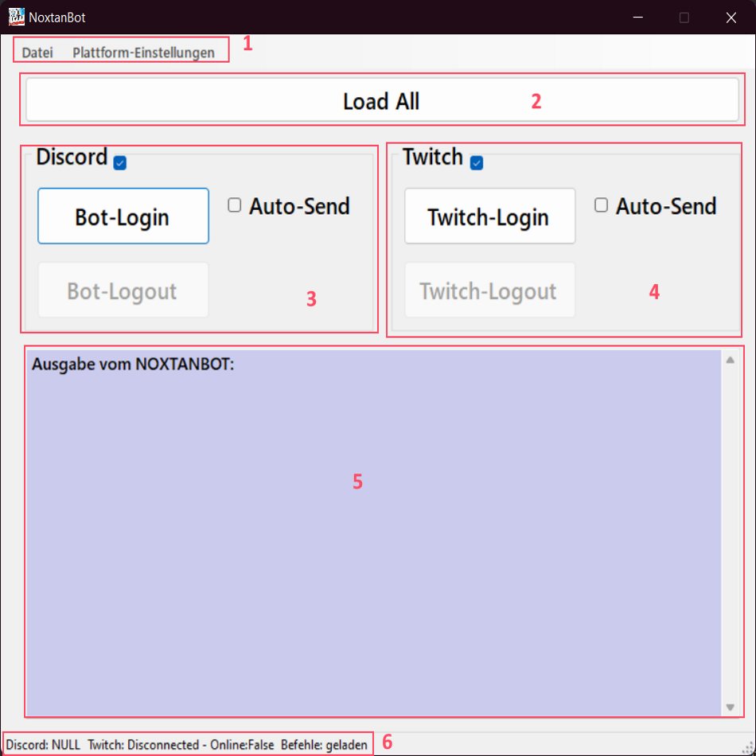

-
Menüleiste mit folgenden Men�punkten:
Datei
- Allgemeinen Einstellungen --> Ruft die Einstellungen zum Bot auf
- Befehle/Commands --> Ruft die Einstellungen der Befehle für alle Platformen auf
- Web-Seiten exprotieren --> Exportiert die Webseiten ins Verzeichnes, in dem sich die .exe befindet.
- Log zurücksetzen --> Löscht alle Einträge des Logfiles
- Import / Export --> Exportiert oder Importiert alle Einstellungen aus einer .json-Datei
- Beenden --> Beendet das Programm
Plattform-Einstellungen
- Discord --> Ruft die Einstellungen zu Discord auf
- Twitch --> Ruft die Einstellungen zu Twitch auf
- Button "Load All" --> Lädt alle Befehle für alle Plattformen nochmal in den Arbeitsspeicher
- Steuerung des Discords-Bots --> Kann gestartet und Beendet werden. Haken aktiviert das Senden von automatischen Nachrichten
- Steuerung des Twitch-Bots --> Kann gestartet und Beendet werden. Haken aktiviert das Senden von automatischen Nachrichten
- Konsolen-Fenster des Bots --> Zeigt die Log-Nachrichten der Bots an
- Statusleiste des Bots --> Zeigt den Zustand der Bots an